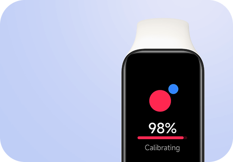

Redmi Smart Band 2
Aguardando slogan XMBR

1.47''
Tela vibrante TFT de 1,47"
100+
Mostradores personalizáveis
Corpo leve e ultrafino de 9,99mm

Modos de treino
30+


5ATM
Resistência à água*

Monitoramento de frequência cardíaca 24h e monitoramento do sono

14 dias de bateria
Uso típico*
6 dias de bateria
Uso intenso*

Tela maior para uma melhor visualização
TFT vibrante de 1,47"
A tela grande TFT de 1,47" oferece uma área de visualização 10,5%* maior, tornando mais fácil de ler sua frequência cardíaca em uma corrida ou suas mensagens no caminho para o trabalho. Confira tudo o que você precisa somente levantando o seu pulso.
+10.5%*
Área de Visualização

247
PPI
*A tela da Redmi Smart Band 2 é aproximadamente 10,5% maior que a Xiaomi Smart Band 7.
Corpo leve e ultrafino de 9,99mm
O novo e atualizado Redmi Smart Band 2 é surpreendentemente fino, leve e confortável.
14.9g*
Leve
9.99mm
Corpo ultrafino

Pulseira em TPU colorida
6 cores para combinar com seu estilo*
6 pulseiras em TPU, com cores diferentes e elegantes para combinar com o seu visual - seja ele moderno, casual, esportivo ou descolado.
Oliva
Marfim

Rosa
Verde
Azul
Preto

+100 mostradores
Renove o visual sempre
Estiloso, legal e elegante. Uma gama de mostradores para combinar com seu humor e roupa.

+30 modos de exercícios
Corrida ao ar livre, yoga, caminhada e muito mais para ajudá-lo a alcançar seus objetivos. Acompanhe em tempo real a duração do exercício, calorias queimadas e a frequência cardíaca.

Resistente à água de até 50 metros
A classificação de resistência à água 5ATM* significa que você não precisa tirar o seu Redmi Smart Band 2 quando for se molhar.
Monitor de frequência cardíaca 24 horas
O sensor embutido PPG de alta precisão acompanha sua frequência cardíaca 24 horas por dia. Ele ainda envia um alerta quando detecta uma frequência cardíaca anormal*.

Medição de oxigênio no sangue*
O nível de saturação de oxigênio no sangue (SpO₂) indica a quantidade de oxigênio no sangue. Obtenha suas medidas de SpO₂ sempre que necessário.
Monitoramento da qualidade do sono
Monitora o sono profundo e cochilos. Fornece relatórios detalhados sobre seus padrões de sono para ajudá-lo a entender como você está dormindo.
Carregamento magnético e 14 dias de duração de bateria*
14
dias
6
dias
Uso típico*
Uso intenso*

*Este produto não foi projetado como um dispositivo médico, nem pretende diagnosticar, tratar, curar ou prevenir qualquer doença. Todos os dados e valores medidos são para referência pessoal apenas.
*Dimensões medidas sem o sensor de frequência cardíaca. Dados obtidos dos Laboratórios Internos da Xiaomi.
*Os dados de duração da bateria são baseados no modo de uso típico e foram obtidos dos Laboratórios Internos da Xiaomi. Os resultados reais podem variar.
*A classificação de resistência à água 5ATM é baseada na norma ISO 22810:2010.
*A menos que especificado, os dados de teste deste produto são do Laboratório Xiaomi.
*A classificação de resistência à água 5ATM significa que você pode usar a banda em piscinas, águas rasas e outros esportes em águas rasas, mas não é adequada para banhos quentes, saunas e mergulho, e deve evitar água de alta velocidade; a resistência à água não é permanente e pode diminuir com o tempo.
*14,9g é o peso líquido, excluindo o peso da pulseira. A espessura de 9,99mm, excluindo o monitor de frequência cardíaca. Os dados de medição específicos podem diferir dos dados do laboratório devido a ferramentas diferentes.
*As imagens desta página são apenas para fins ilustrativos e podem não ser a representação exata dos produtos. A IU real pode variar.
*As condições de teste do modo de uso típico são: carga total, configurações de fábrica, exibição estática, monitoramento de frequência cardíaca a cada 30 minutos, monitoramento de sono de alta precisão desativado, brilho da tela sensível ao movimento ativado, notificações de mensagem ativadas. Todas as outras configurações foram configurações de fábrica. 100 notificações recebidas diariamente, 10 notificações de chamadas, 10 segundos de vibração. Pulso levantado para ativar a tela 200 vezes por dia; dados do aplicativo sincronizados uma vez por dia; oxigênio no sangue medido manualmente duas vezes por dia; exercício 60 minutos por semana.
*As condições de teste do modo de uso intenso são: carga total, configurações de fábrica, exibição estática, monitoramento de frequência cardíaca a cada 1 minuto, monitoramento de sono de alta precisão ativado, brilho da tela sensível ao movimento ativado. Todas as outras configurações foram configurações de fábrica. 200 notificações recebidas diariamente, 15 notificações de chamadas, 10 segundos de vibração. Pulso levantado para ativar a tela 500 vezes por dia; dados do aplicativo sincronizados uma vez por dia; oxigênio no sangue medido manualmente duas vezes por dia; exercício 90 minutos por semana.
*O Redmi Smart Band 2 vem com uma pulseira preta ou branca, pulseira de outras cores devem ser compradas separadamente.
*Blood oxygen measurement needs to be done manually.